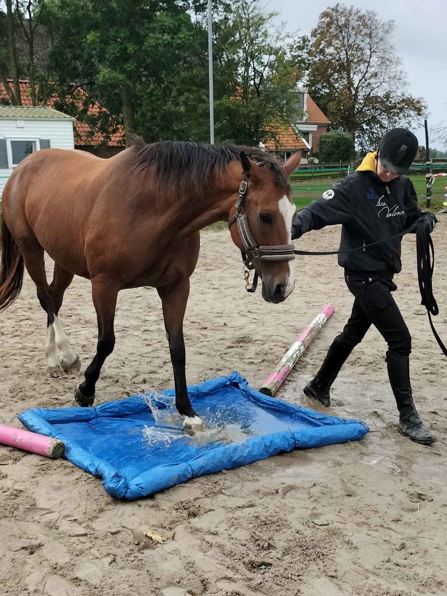

Samen nieuwe ervaringen opdoen
Met vertrouwen
op ontdekking.
Obstakeltraining daagt jullie uit om samen nieuwe situaties te verkennen, op een tempo dat bij jou en je paard past.
We maken rustig kennis met verschillende obstakels en kijken hoe je paard reageert. Met duidelijke aanwijzingen en kleine stappen ontstaat er ruimte om te ontdekken en te leren.
De trainingen vinden plaats op vaste data en deelname is mogelijk via inschrijving. Zo oefenen jullie in een prettige omgeving aan aandacht, vertrouwen en samenwerking.
Vraag naar de trainingsdata